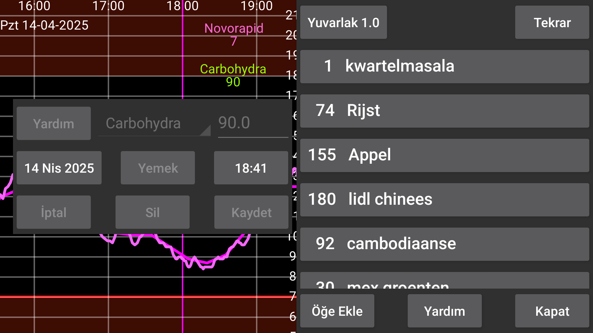
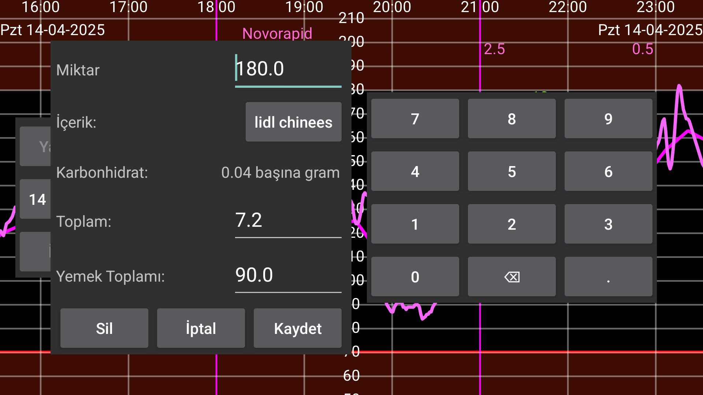
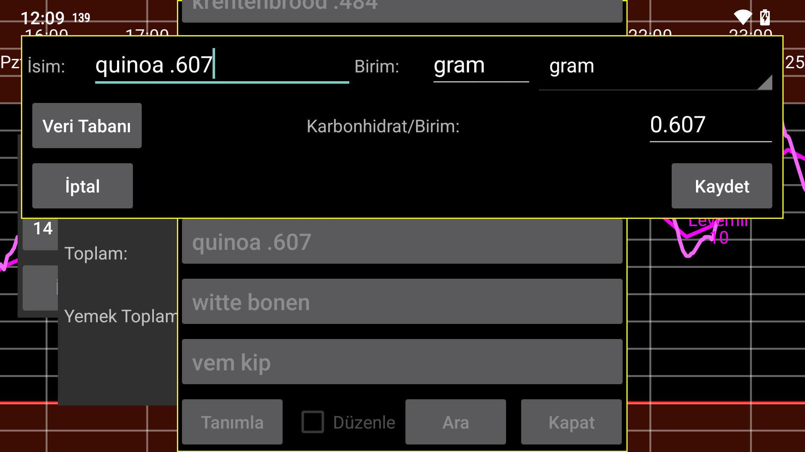

be de fr it nl pl pt ru tr uk zh en
SBir ögünün içerik miktarini belirtin. Toplam karbonhidrat içerigi daha sonra hesaplanir. Ayrica, tüm ögün veya içerik için karbonhidrat miktarini belirtmek mümkündür ve program daha sonra ihtiyaciniz olan içerik miktarini belirler. Bir ögeyi yemege eklemek için "Öge ekle" dügmesine basin. Çagrilan iletisim kutusunda bir içerik seçebilir ve miktarini (veya ögünün veya bu ögenin toplam karbonhidratini) belirtebilirsiniz. Seç'e veya önceden belirtilen içeriklere basarak, önceden tanimlanmis içeriklerin listesine gelirsiniz. Orada Tanimla'ya basarak yeni bir içerik tanimlayabilirsiniz. Burada daha sonra o içerigin adini ve karbonhidrat içerigini istenilen birimde belirleyebilirsiniz. Ayrica, Veritabani'na basarak bir gida bilesimi veritabanina girebilir, burada içerikleri arayabilir ve bir gidanin bilesimini görebilir ve Seç'e basarak bu gidanin adini ve karbonhidrat içerigini bir içerik tanimina ekleyebilirsiniz.